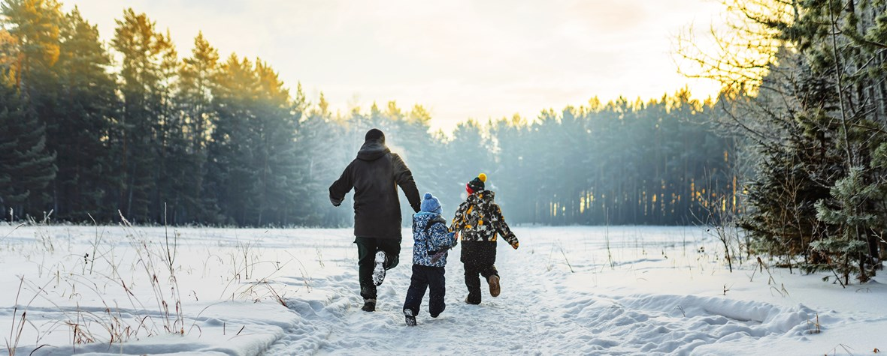

Winter is one of the four temperate seasons, following autumn/fall and preceding spring. It is characterized by cold temperatures, shorter daylight hours, and often the presence of snow and ice in many regions.

Key Characteristics:
Cold Weather: Winter is known for its cold temperatures, with daytime highs typically ranging from chilly to freezing, depending on the region. Nights are even colder, often dropping below freezing, leading to frost and ice formation.
Snowfall: In many regions, winter brings snowfall, covering the landscape in a blanket of white. Snowflakes form when water vapor in the atmosphere condenses and freezes into ice crystals, falling to the ground to accumulate.
Winter Sports: Winter is a popular time for outdoor activities such as skiing, snowboarding, ice skating, sledding, and snowshoeing. These winter sports take advantage of the snowy conditions and provide opportunities for recreation and exercise.
Holiday Season: Winter is associated with various holidays and celebrations, including Christmas, Hanukkah, New Year's Eve, and other cultural and religious observances. These holidays often involve traditions, festivities, and gatherings with family and friends.
Winter Solstice: The winter solstice, usually occurring around December 21st in the Northern Hemisphere, marks the shortest day and longest night of the year. It signals the official beginning of winter and is celebrated in various cultures.
Cozy Atmosphere: Winter evokes feelings of coziness and warmth, with people enjoying hot drinks, comfort foods, and evenings by the fireplace. It's a time for wearing layers, wrapping up in blankets, and embracing the comforts of home.
Weather Extremes: While winter is generally characterized by cold temperatures and snow, it can also experience weather extremes such as blizzards, ice storms, and polar vortex events. These extreme weather conditions can pose risks to human safety and infrastructure.
Overall, winter is a season of contrasts, with its cold temperatures and snowy landscapes contrasting with the warmth of holiday gatherings and indoor coziness. It's a time for enjoying winter sports, celebrating traditions, and finding beauty in the starkness of the season.